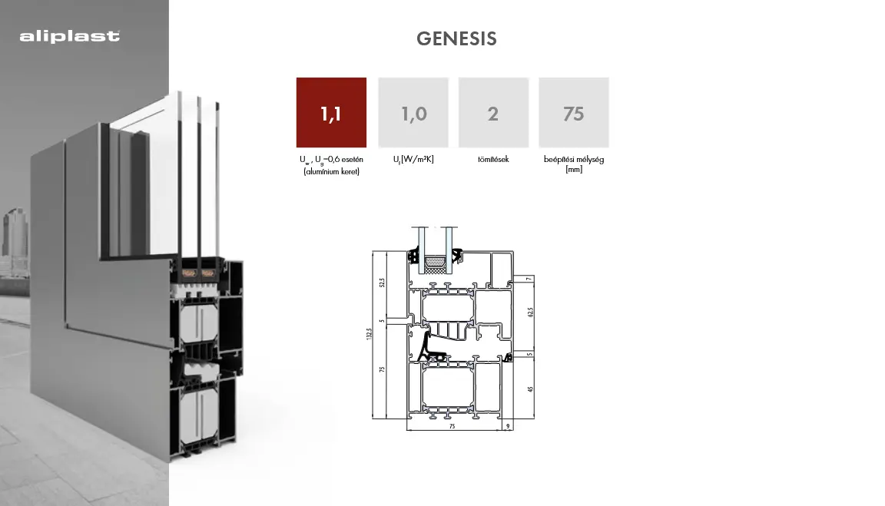
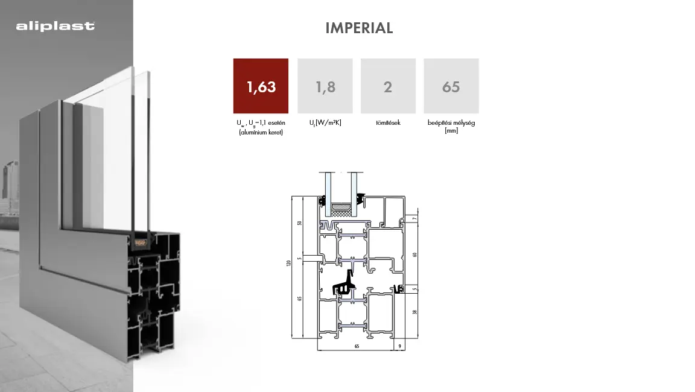

Modern esztétika és kompromisszumok nélküli tartósság
Az alumínium nyílászárók a modern építészet tökéletes kiegészítői: letisztult megjelenés, kiemelkedő tartósság és kiváló hőszigetelés jellemzi őket. Időtálló szerkezetük, nagy méretben is gyártható kivitelük és széles színválasztékuk ideálissá teszi őket lakó- és ipari épületekhez egyaránt.
Bár az alumínium jó hővezető, a modern Aliplast profilok innovatív hőhídmentes technológiával készülnek. A többrekeszes kialakítás és a speciális hőszigetelő betétek garantálják, hogy az alumínium ablakok is megfeleljenek a legszigorúbb energetikai követelményeknek, miközben szerkezeti stabilitásuk messze felülmúlja a többi alapanyagot.
Az alumínium kiváló szilárdság/súly aránya lehetővé teszi hatalmas üvegfelületek és keskeny profilok kombinálását.
Nem vetemedik, nem korrodál, és évtizedekig megőrzi eredeti formáját és színét minimális karbantartás mellett.
Végtelen színválaszték a RAL skála szerint, beleértve az eloxált és strukturált felületeket is.
Természetéből fakadóan robusztus szerkezet, amely magas szintű védelmet nyújt a betörések ellen.

A Genesis 75 egy háromkamrás ablakrendszer, amelyet a legmagasabb hőszigetelési igények kielégítésére terveztek. Ideális választás modern családi házakhoz, ahol az esztétika és az energiahatékonyság kéz a kézben jár.

Az Imperial rendszer egy bevált, háromkamrás megoldás ablakokhoz és ajtókhoz. Kiváló mechanikai tulajdonságai és kedvező ár-érték aránya miatt rendkívül népszerű mind lakossági, mind ipari projekteknél.
Kérjen ingyenes felmérést és árajánlatot alumínium nyílászáróinkra!
Ajánlatkérés Küldése